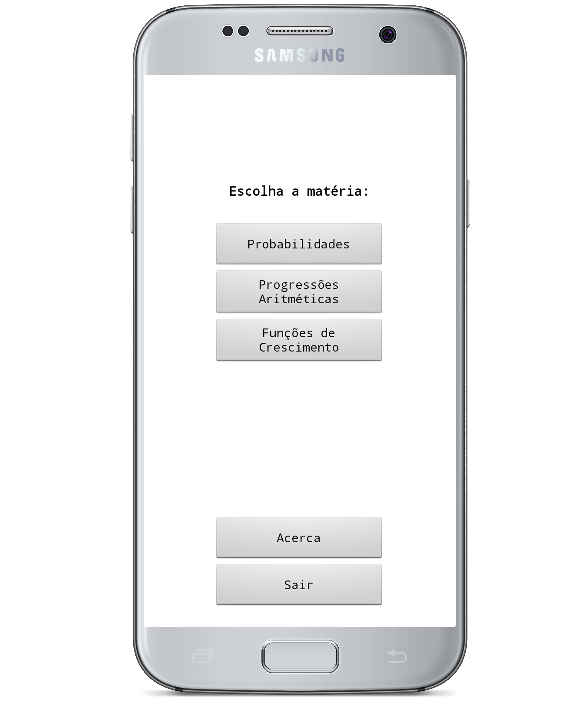

Página Inicial
A aplicação Math Helper foi um projeto desenhado por Júlio Santos Caseiro, aluno do Curso Profissional Técnico Gestão e Programação de Sistemas Informáticos da Escola Secundária José Saramago - Mafra.
Esta aplicação tem como principal objetivo ajudar todos os alunos que frequentam o seu curso na disciplina de Matemática do 12º ano. Com este projeto, Júlio conseguiu dar a acessibilidade aos alunos que mais necessitam de explicações e exclarecimentos acerca da matéria.
À direita podes encontrar um breve exemplo de como a aplicação se utiliza no teu android!
Podes escolher a matéria que quiseres estudar e a aplicação vai-te encaminhar diretamente para a nossa página web com a matéria que tu escolheste!
Faz download à aplicação para Android aqui!